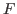
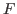
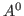
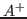
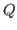
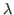
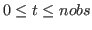
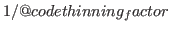
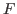
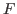

Footnotes
(10)
If you want to align
the paper with the description herein, please note that  is
and  is .
is
and  is .
(11)
An example can be found at https://github.com/DynareTeam/dynare/blob/master/tests/ms-dsge/test_ms_dsge.mod.
Next: Displaying and saving results, Previous: Sensitivity and identification analysis, Up: The Model file [Contents][Index]
Given a list of variables, observed variables and a data file, Dynare can be used to solve a Markov-switching SBVAR model according to Sims, Waggoner and Zha (2008).10 Having done this, you can create forecasts and compute the marginal data density, regime probabilities, IRFs, and variance decomposition of the model.
The commands have been modularized, allowing for multiple calls to the
same command within a <mod_file>.mod file. The default is to use
<mod_file> to tag the input (output) files used (produced) by the
program. Thus, to call any command more than once within a
<mod_file>.mod file, you must use the *_tag options
described below.
Description
Declares the Markov state variable information of a Markov-switching SBVAR model.
Options
chain = INTEGERThe Markov chain considered. Default: none
number_of_regimes = INTEGERSpecifies the total number of regimes in the Markov Chain. This is a required option.
duration = DOUBLE | [ROW VECTOR OF DOUBLES]The duration of the regimes or regimes. This is a required option.
When passed a scalar real number, it specifies the average duration for all regimes in
this chain. When passed a vector of size equal number_of_regimes, it specifies
the average duration of the associated regimes (1:number_of_regimes) in this chain.
An absorbing state can be specified through the restrictions-option.
restrictions = [[ROW VECTOR OF 3 DOUBLES],[ROW VECTOR OF 3 DOUBLES],...]Provides restrictions on this chain’s regime transition matrix.
Its vector argument takes three inputs of the form:
[current_period_regime, next_period_regime, transition_probability]
The first two entries are positive integers, and the third is a non-negative real in the set [0,1].
If restrictions are specified for every transition for a regime, the sum of the probabilities
must be 1. Otherwise, if restrictions are not provided for every transition for a given
regime the sum of the provided transition probabilities msut be <1.
Regardless of the number of lags, the restrictions are specified for parameters
at time t since the transition probability for a parameter at t is equal to
that of the parameter at t-1.
In case of estimating a MS-DSGE model,11 in addition the following options are allowed:
parameters = [LIST OF PARAMETERS]This option specifies which parameters are controlled by this Markov Chain.
number_of_lags = DOUBLEProvides the number of lags that each parameter can take within each regime in this chain.
Example
markov_switching(chain=1, duration=2.5, restrictions=[[1,3,0],[3,1,0]]);
Specifies a Markov-switching BVAR with a first chain with 3 regimes that all have a duration of 2.5 periods. The probability of directly going from regime 1 to regime 3 and vice versa is 0.
Example
markov_switching(chain=2, number_of_regimes=3, duration=[0.5, 2.5, 2.5], parameter=[alpha, rho], number_of_lags=2, restrictions=[[1,3,0],[3,3,1]]);
Specifies a Markov-switching DSGE model with a second chain with 3 regimes
that have durations of 0.5, 2.5, and 2.5 periods, respectively. The switching parameters
are alpha and rho. The probability of directly going from
regime 1 to regime 3 is 0, while regime 3 is an absorbing state.
Description
Each Markov chain can control the switching of a set of parameters. We allow the parameters to be divided equation by equation and by variance or slope and intercept.
Options
coefficientsSpecifies that only the slope and intercept in the given equations are
controlled by the given chain. One, but not both, of
coefficients or variances must appear. Default:
none
variancesSpecifies that only variances in the given equations are controlled by
the given chain. One, but not both, of coefficients or
variances must appear. Default: none
equationsDefines the equation controlled by the given chain. If not specified,
then all equations are controlled by chain. Default: none
chain = INTEGERSpecifies a Markov chain defined by markov_switching. Default:
none
Description
To be documented. For now, see the wiki: http://www.dynare.org/DynareWiki/SbvarOptions
Options
datafilefreqinitial_yearinitial_subperiodfinal_yearfinal_subperioddatavlistvlistlogvlistperrestriction_fnamenlagscross_restrictionscontemp_reduced_formreal_pseudo_forecastno_bayesian_priordummy_obsnstatesindxscalesstatesalphabetagsig2_lmdmq_diagflat_priorncsknstdninvindxparrindxovrabandindxapapbandindximfindxforeforebandindxgforhatindxgimfhatindxestimaindxgdlseq_mscmsncmseq_cmstlindxtlnumbercnumforecastcoefficients_prior_hyperparametersDescription
This block is terminated by end;, and contains lines of the
form:
UPPER_CHOLESKY; LOWER_CHOLESKY; EXCLUSION CONSTANTS; EXCLUSION LAG INTEGER; VARIABLE_NAME [,VARIABLE_NAME…] EXCLUSION LAG INTEGER; EQUATION INTEGER, VARIABLE_NAME [,VARIABLE_NAME…] RESTRICTION EQUATION INTEGER, EXPRESSION = EXPRESSION;
To be documented. For now, see the wiki: http://www.dynare.org/DynareWiki/MarkovSwitchingInterface
Description
Triggers the creation of an initialization file for, and the estimation
of, a Markov-switching SBVAR model. At the end of the run, the
, ,  and matrices are contained
in the oo_.ms structure.
Options
General Options
file_tag = FILENAMEThe portion of the filename associated with this run. This will create
the model initialization file, init_<file_tag>.dat. Default:
<mod_file>
output_file_tag = FILENAMEThe portion of the output filename that will be assigned to this run.
This will create, among other files,
est_final_<output_file_tag>.out,
est_intermediate_<output_file_tag>.out. Default:
<file_tag>
no_create_initDo not create an initialization file for the model. Passing this option
will cause the Initialization Options to be ignored. Further, the
model will be generated from the output files associated with the
previous estimation run (i.e. est_final_<file_tag>.out,
est_intermediate_<file_tag>.out or init_<file_tag>.dat,
searched for in sequential order). This functionality can be useful for
continuing a previous estimation run to ensure convergence was reached
or for reusing an initialization file. NB: If this option is not passed,
the files from the previous estimation run will be overwritten. Default:
off (i.e. create initialization file)
Initialization Options
coefficients_prior_hyperparameters = [DOUBLE1 DOUBLE2 DOUBLE3 DOUBLE4 DOUBLE5 DOUBLE6]Sets the hyper parameters for the model. The six elements of the argument vector have the following interpretations:
PositionInterpretation
1Overall tightness for and
2Relative tightness for
3Relative tightness for the constant term
4Tightness on lag decay (range: 1.2 - 1.5); a faster decay produces better inflation process
5Weight on nvar sums of coeffs dummy observations (unit roots)
6Weight on single dummy initial observation including constant
Default: [1.0 1.0 0.1 1.2 1.0 1.0]
freq = INTEGER | monthly | quarterly | yearlyFrequency of the data (e.g. monthly, 12). Default:
4
initial_year = INTEGERThe first year of data. Default: none
initial_subperiod = INTEGERThe first period of data (i.e. for quarterly data, an integer in
[1,4]). Default: 1
final_year = INTEGERThe last year of data. Default: Set to encompass entire dataset.
final_subperiod = INTEGERThe final period of data (i.e. for monthly data, an integer in
[1,12]. Default: When final_year is also missing, set to
encompass entire dataset; when final_year is indicated, set to the
maximum number of subperiods given the frequency (i.e. 4 for
quarterly data, 12 for monthly,...).
datafile = FILENAMESee datafile.
xls_sheet = NAMESee xls_sheet.
xls_range = RANGESee xls_range.
nlags = INTEGERThe number of lags in the model. Default: 1
cross_restrictionsUse cross and restrictions. Default: off
contemp_reduced_formUse contemporaneous recursive reduced form. Default: off
no_bayesian_priorDo not use Bayesian prior. Default: off (i.e. use Bayesian
prior)
alpha = INTEGERAlpha value for squared time-varying structural shock lambda. Default:
1
beta = INTEGERBeta value for squared time-varying structural shock lambda. Default:
1
gsig2_lmdm = INTEGERThe variance for each independent  parameter under
SimsZha restrictions. Default: 50^2
specification = sims_zha | noneThis controls how restrictions are imposed to reduce the number of
parameters. Default: Random Walk
Estimation Options
convergence_starting_value = DOUBLEThis is the tolerance criterion for convergence and refers to changes in
the objective function value. It should be rather loose since it will
gradually be tightened during estimation. Default: 1e-3
convergence_ending_value = DOUBLEThe convergence criterion ending value. Values much smaller than square
root machine epsilon are probably overkill. Default: 1e-6
convergence_increment_value = DOUBLEDetermines how quickly the convergence criterion moves from the starting
value to the ending value. Default: 0.1
max_iterations_starting_value = INTEGERThis is the maximum number of iterations allowed in the hill-climbing
optimization routine and should be rather small since it will gradually
be increased during estimation. Default: 50
max_iterations_increment_value = DOUBLEDetermines how quickly the maximum number of iterations is
increased. Default: 2
max_block_iterations = INTEGERThe parameters are divided into blocks and
optimization proceeds over each block. After a set of blockwise
optimizations are performed, the convergence criterion is checked and
the blockwise optimizations are repeated if the criterion is
violated. This controls the maximum number of times the blockwise
optimization can be performed. Note that after the blockwise
optimizations have converged, a single optimization over all the
parameters is performed before updating the convergence value and
maximum number of iterations. Default: 100
max_repeated_optimization_runs = INTEGERThe entire process described by max_block_iterations is repeated
until improvement has stopped. This is the maximum number of times the
process is allowed to repeat. Set this to 0 to not allow
repetitions. Default: 10
function_convergence_criterion = DOUBLEThe convergence criterion for the objective function when
max_repeated_optimizations_runs is positive. Default: 0.1
parameter_convergence_criterion = DOUBLEThe convergence criterion for parameter values when
max_repeated_optimizations_runs is positive. Default: 0.1
number_of_large_perturbations = INTEGERThe entire process described by max_block_iterations is repeated
with random starting values drawn from the posterior. This specifies the
number of random starting values used. Set this to 0 to not use
random starting values. A larger number should be specified to ensure
that the entire parameter space has been covered. Default: 5
number_of_small_perturbations = INTEGERThe number of small perturbations to make after the large perturbations
have stopped improving. Setting this number much above 10 is
probably overkill. Default: 5
number_of_posterior_draws_after_perturbation = INTEGERThe number of consecutive posterior draws to make when producing a small
perturbation. Because the posterior draws are serially correlated, a
small number will result in a small perturbation. Default: 1
max_number_of_stages = INTEGERThe small and large perturbation are repeated until improvement has
stopped. This specifics the maximum number of stages allowed. Default:
20
random_function_convergence_criterion = DOUBLEThe convergence criterion for the objective function when
number_of_large_perturbations is positive. Default: 0.1
random_parameter_convergence_criterion = DOUBLEThe convergence criterion for parameter values when
number_of_large_perturbations is positive. Default: 0.1
Example
ms_estimation(datafile=data, initial_year=1959, final_year=2005, nlags=4, max_repeated_optimization_runs=1, max_number_of_stages=0); ms_estimation(file_tag=second_run, datafile=data, initial_year=1959, final_year=2005, nlags=4, max_repeated_optimization_runs=1, max_number_of_stages=0); ms_estimation(file_tag=second_run, output_file_tag=third_run, no_create_init, max_repeated_optimization_runs=5, number_of_large_perturbations=10);
Description
Simulates a Markov-switching SBVAR model.
Options
file_tag = FILENAMEThe portion of the filename associated with the
ms_estimation run. Default: <mod_file>
output_file_tag = FILENAMEThe portion of the output filename that will be
assigned to this run. Default: <file_tag>
mh_replic = INTEGERThe number of draws to save. Default: 10,000
drop = INTEGERThe number of burn-in draws. Default:
0.1*mh_replic*thinning_factor
thinning_factor = INTEGERThe total number of draws is equal to
thinning_factor*mh_replic+drop. Default: 1
adaptive_mh_draws = INTEGERTuning period for Metropolis-Hastings draws. Default: 30,000
save_drawsSave all elements of , , , and
, to a file named draws_<<file_tag>>.out with each
draw on a separate line. A file that describes how these matrices are
laid out is contained in draws_header_<<file_tag>>.out. A file
called load_flat_file.m is provided to simplify loading the
saved files into the corresponding variables A0, Aplus,
Q, and Zeta in your MATLAB/Octave workspace. Default:
off
Example
ms_simulation(file_tag=second_run); ms_simulation(file_tag=third_run, mh_replic=5000, thinning_factor=3);
Description
Computes the marginal data density of a Markov-switching SBVAR model
from the posterior draws. At the end of the run, the Muller and Bridged
log marginal densities are contained in the oo_.ms structure.
Options
file_tag = FILENAMESee file_tag.
output_file_tag = FILENAMESee output_file_tag.
simulation_file_tag = FILENAMEThe portion of the filename associated with
the simulation run. Default: <file_tag>
proposal_type = INTEGERThe proposal type:
1Gaussian
2Power
3Truncated Power
4Step
5Truncated Gaussian
Default: 3
proposal_lower_bound = DOUBLEThe lower cutoff in terms of probability. Not used for
proposal_type in [1,2]. Required for all other proposal
types. Default: 0.1
proposal_upper_bound = DOUBLEThe upper cutoff in terms of probability. Not used for
proposal_type equal to 1. Required for all other proposal
types. Default: 0.9
mdd_proposal_draws = INTEGERThe number of proposal draws. Default: 100,000
mdd_use_mean_centerUse the posterior mean as center. Default: off
Description
Computes smoothed regime probabilities of a Markov-switching SBVAR
model. Output .eps files are contained in
<output_file_tag/Output/Probabilities>.
Options
file_tag = FILENAMESee file_tag.
output_file_tag = FILENAMESee output_file_tag.
filtered_probabilitiesFiltered probabilities are computed instead of smoothed. Default:
off
real_time_smoothedSmoothed probabilities are computed based on time t information
for
. Default: off
Description
Computes impulse response functions for a Markov-switching SBVAR
model. Output .eps files are contained in
<output_file_tag/Output/IRF>, while data files are contained in
<output_file_tag/IRF>.
Options
file_tag = FILENAMESee file_tag.
output_file_tag = FILENAMESee output_file_tag.
simulation_file_tag = FILENAMESee simulation_file_tag.
horizon = INTEGERThe forecast horizon. Default: 12
filtered_probabilitiesUses filtered probabilities at the end
of the sample as initial conditions for regime probabilities. Only one
of filtered_probabilities, regime and regimes may
be passed. Default: off
error_band_percentiles = [DOUBLE1 …]The percentiles to compute. Default:
[0.16 0.50 0.84]. If median is passed, the default
is [0.5]
shock_draws = INTEGERThe number of regime paths to draw. Default:
10,000
shocks_per_parameter = INTEGERThe number of regime paths to draw under
parameter uncertainty. Default: 10
thinning_factor = INTEGEROnly
 of the
draws in posterior draws file are used. Default: 1
free_parameters = NUMERICAL_VECTORA vector of free parameters to initialize theta of the model. Default: use estimated parameters
parameter_uncertaintyCalculate IRFs under parameter
uncertainty. Requires that ms_simulation has been
run. Default: off
regime = INTEGERGiven the data and model parameters, what is the ergodic
probability of being in the specified regime. Only one of
filtered_probabilities, regime and regimes may be
passed. Default: off
regimesDescribes the evolution of regimes. Only one of
filtered_probabilities, regime and regimes may be
passed. Default: off
medianA shortcut to setting
error_band_percentiles=[0.5]. Default: off
Description
Generates forecasts for a Markov-switching SBVAR model. Output
.eps files are contained in <output_file_tag/Output/Forecast>,
while data files are contained in <output_file_tag/Forecast>.
Options
file_tag = FILENAMESee file_tag.
output_file_tag = FILENAMESee output_file_tag.
simulation_file_tag = FILENAMESee simulation_file_tag.
data_obs_nbr = INTEGERThe number of data points included in the output. Default: 0
error_band_percentiles = [DOUBLE1 …]shock_draws = INTEGERSee shock_draws.
shocks_per_parameter = INTEGERSee shocks_per_parameter.
thinning_factor = INTEGERSee thinning_factor.
free_parameters = NUMERICAL_VECTORSee free_parameters.
parameter_uncertaintyregime = INTEGERSee regime.
regimesSee regimes.
medianSee median.
horizon = INTEGERSee horizon.
Description
Computes the variance decomposition for a Markov-switching SBVAR
model. Output .eps files are contained in
<output_file_tag/Output/Variance_Decomposition>, while data files
are contained in <output_file_tag/Variance_Decomposition>.
Options
file_tag = FILENAMESee file_tag.
output_file_tag = FILENAMESee output_file_tag.
simulation_file_tag = FILENAMESee simulation_file_tag.
horizon = INTEGERSee horizon.
filtered_probabilitiesno_error_bandsDo not output percentile error bands (i.e. compute mean). Default:
off (i.e. output error bands)
error_band_percentiles = [DOUBLE1 …]shock_draws = INTEGERSee shock_draws.
shocks_per_parameter = INTEGERSee shocks_per_parameter.
thinning_factor = INTEGERSee thinning_factor.
free_parameters = NUMERICAL_VECTORSee free_parameters.
parameter_uncertaintyregime = INTEGERSee regime.
regimesSee regimes.
If you want to align
the paper with the description herein, please note that  is
and  is .
is
and  is .
An example can be found at https://github.com/DynareTeam/dynare/blob/master/tests/ms-dsge/test_ms_dsge.mod.
Next: Displaying and saving results, Previous: Sensitivity and identification analysis, Up: The Model file [Contents][Index]